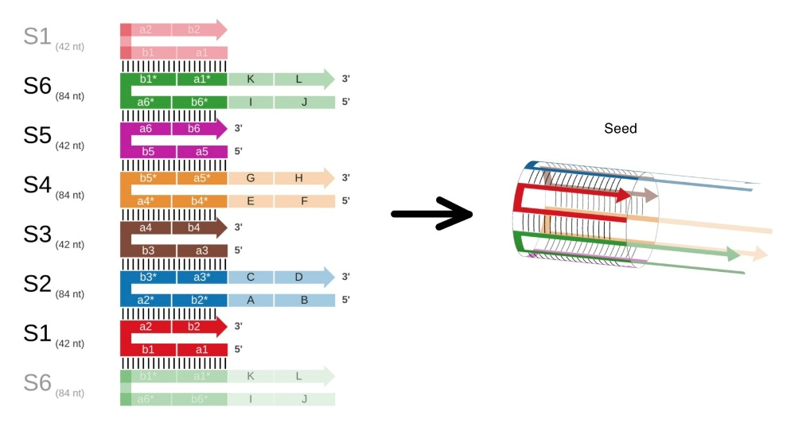
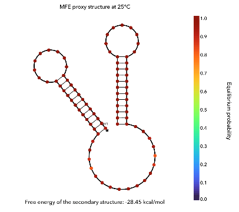
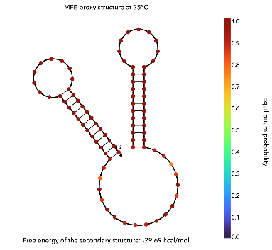
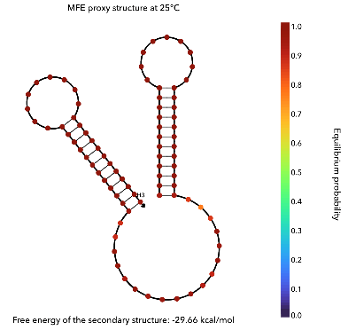
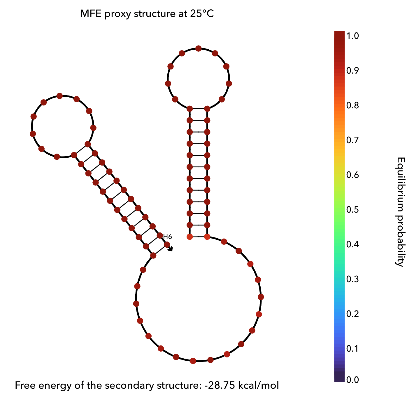
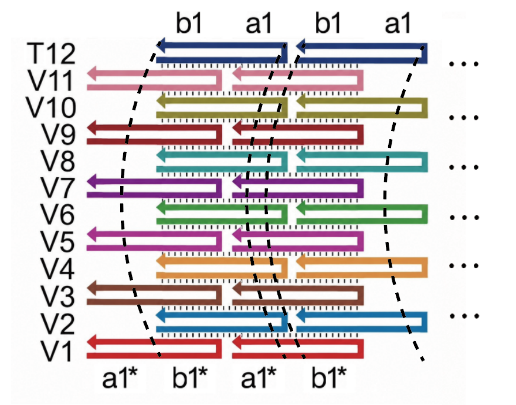
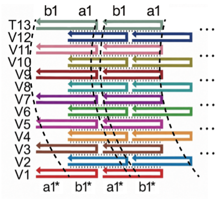

EXPERIMENT
Overview
We divided the experimental validation into two modules.
Experiment A:
Synthesis and elongation of a 6-helix DNA bundle via Bundled HCR.
In Experiment A, we investigated the reaction mechanism of Bundled HCR using a minimal model designed to elongate into a 6-helix DNA bundle. Given the high scalability of the Bundled HCR architecture, successful synthesis of the 6-helix bundle indicates that the system can be readily scaled up to 12-helix and 13-helix bundles.
Experiment B:
Anchoring of 12-helix and 13-helix DNA Bundles to Lipid Membranes
In Experiment B, we investigated whether cholesterol-modified 12-helix and 13-helix DNA bundles could anchor to lipid membranes. Based on our simulation results, we selected 12-helix and 13-helix DNA bundles because they were expected to possess sufficient rigidity to deform and disrupt lipid membranes. These structures were pre-assembled via thermal annealing before the experiment.
2. Experiment A: Synthesis and Elongation of a 6-Helix DNA Bundle via Bundled HCR
Materials
As the materials for Bundled HCR, we prepared a seed and six double-hairpin DNA strands (H1–H6).
The seed consists of the single-stranded DNAs S1–S6 shown in Table 1 and assembles into the structure shown in Figure 1 by annealing. In Table 1, a domain labeled “a1*” hybridizes complementarily to domain “a1”.
| Strand | Length | Domains |
|---|---|---|
| S1 | 42 nt | a1 – b1 – a2 – b2 |
| S2 | 84 nt | B – A – b2* – a2* – b3* – a3* – C – D |
| S3 | 42 nt | a3 – b3 – a4 – b4 |
| S4 | 84 nt | F – E – b4* – a4* – b5* – a5* – G – H |
| S5 | 42 nt | a5 – b5 – a6 – b6 |
| S6 | 84 nt | J – I – b6* – a6* – b1* – a1* – K – L |
Full sequences: Appendix

The sequences of the six double-hairpin DNAs (H1–H6) are shown in Table 2, and the structures they adopt in solution at 25 °C are shown in Figure 2.
| Strand | Length | Domains |
|---|---|---|
| H1 | 84 nt | L – R – L – K – A* – B* – M – B |
| H2 | 84 nt | D – N – D – C – E* – F* – O – F |
| H3 | 84 nt | H – P – H – G – I* – J* – Q – J |
| H4 | 84 nt | B – A – B – M – N* – D* – C – D |
| H5 | 84 nt | F – E – F – O – P* – H* – G – H |
| H6 | 84 nt | J – I – J – Q – R* – L* – K – L |
Full sequences: Appendix

(a) H1

(b) H2

(c) H3
(d) H4

(e) H5

(f) H6

(g) H1

(h) H2

(i) H3

(j) H4

(k) H5

(l) H6
2.1 Verification of Seed Formation by PAGE Electrophoresis
Overview
To confirm that the seed annealing proceeded properly, we performed PAGE. Each of the single-stranded DNAs S1–S6 and the annealed seed were electrophoresed to check for a difference in molecular weight. Electrophoresis was performed in 1× TBE buffer containing 12 mM MgCl2 at 150 V for 60 minutes at 4 °C.
Results

Discussion
High-molecular-weight bands were observed only in the Seeds lane, indicating that the seed was assembled by annealing. Calibration with the ladder (migration distance vs. log molecular weight showed high linearity) estimated the second band from the top at approximately 228 bp. This value is close to the sum of the apparent sizes of the S1–S6 bands estimated from the same calibration (note that these apparent sizes are gel-based estimates and do not correspond to the actual length). Therefore, we tentatively assigned this band to the seed. Given the seed's structure, the bands above it likely correspond to larger assemblies, such as seeds composed of 12 or 18 strands, or tile-like structures that did not form a tubular shape. Because the ladder consists of double-stranded DNA, these size estimates are approximate. Nevertheless, the high-molecular-weight bands only in the Seeds lane support the formation of the seed by annealing.
2.2 Verification of Bundled HCR Progression by Gel Electrophoresis
Overview
Agarose gel electrophoresis was performed on samples in which the seed and H1–H6 were mixed, to confirm whether Bundled HCR proceeded and the bundle elongated.
After mixing the seed with H1–H6, the samples were left at room temperature for approximately 22 hours. Electrophoresis was performed in 1× TAE buffer containing 5 mM MgCl2 at 100 V for 40 minutes at 4 °C.
Results

Discussion
Smears extending into the high-molecular-weight region were observed in the seed:H1–H6 = 1:200, 1:100, and 1:50 lanes. In the 1:50, 1:20, and 1:5 lanes, high-molecular-weight structures that did not enter the gel were retained in the wells. These structures may be DNA Bundles.
In the 1:5 lane, the H1–H6 band was faint, indicating that H1–H6 had been consumed. A smear was also observed in the H1–H6-only lane, which is likely attributable to leakage.
2.3 Observation of DNA Bundles by AFM
Overview
The seed and H1–H6 were mixed in a buffer of 1× TE, 5 mM MgCl2, and 300 mM NaCl and left overnight at room temperature, and the samples were observed by AFM.
Results


Discussion
Elongated structures were observed, indicating that the DNA Bundle elongated by Bundled HCR.
3. Experiment B: Anchoring of 12-Helix and 13-Helix DNA Bundles to Lipid Membranes
Materials
Following the designs reported in previous studies [1, 2], the 12-helix and 13-helix bundles were synthesized by annealing the single-stranded DNAs V1–V12, T12, and T13 shown in Table 3.
In the 12-helix bundle, V1–V11 and T12 hybridize as shown in Figure 7; in the 13-helix bundle, V1–V12 and T13 hybridize as shown in Figure 8. Each assembles into a bundle hundreds to thousands of nanometers long.
Because cholesterol was attached to the 3′ end of the 42-nt strand V1, the resulting 12- and 13-helix bundles carry a cholesterol modification every 21 nucleotides.
For the cholesterol-free 12- and 13-helix bundles prepared as controls, unmodified V1 was used instead.
| Strand | Length | Domains |
|---|---|---|
| V1 (cholesterol-modified) | 42 nt | a1* – b1* – a2 – b2 |
| V2 | 42 nt | a2* – b2* – a3 – b3 |
| V3 | 42 nt | a3* – b3* – a4 – b4 |
| V4 | 42 nt | a4* – b4* – a5 – b5 |
| V5 | 42 nt | a5* – b5* – a6 – b6 |
| V6 | 42 nt | a6* – b6* – a7 – b7 |
| V7 | 42 nt | a7* – b7* – a8 – b8 |
| V8 | 42 nt | a8* – b8* – a9 – b9 |
| V9 | 42 nt | a9* – b9* – a10 – b10 |
| V10 | 42 nt | a10* – b10* – a11 – b11 |
| V11 | 42 nt | a11* – b11* – a12 – b12 |
| V12 | 42 nt | a12* – b12* – a13 – b13 |
| T12 | 42 nt | a12* – b12* – a1 – b1 |
| T13 | 42 nt | a13* – b13* – a1 – b1 |
Full sequences: Appendix


As Figure 8 shows, in the 13-helix bundle V1 and T13 hybridize while twisting, so the bundle becomes twisted and cholesterol protrudes in all directions around it. In the 12-helix bundle, by contrast, V1 and T12 hybridize without twisting, so cholesterol protrudes in only one direction.
3.1 Verification of Bundle Formation by PAGE Electrophoresis
Overview
To confirm that annealing proceeded properly and the 12- and 13-helix bundles formed, we performed PAGE. Each of the single-stranded DNAs V1–V12, T12, and T13 and the annealed cholesterol-modified 12- and 13-helix bundles were electrophoresed to check for a difference in molecular weight.
Electrophoresis was performed in 1× TAE buffer containing 12 mM MgCl2 at 100 V for 60 minutes at 4 °C.
Results


Discussion
Only in the 12-bundle and 13-bundle lanes was a band observed at the top of the gel that had not entered the gel. This indicates that large structures were present only in the 12-bundle and 13-bundle samples, suggesting that annealing proceeded properly and the DNA bundles were synthesized.
Because V1–T13 are 42-nt ssDNAs, bands appearing at 20–30 bp are reasonable. The faint bands observed at 40–50 bp in the V4, V5, V9, and V12 lanes are thought to be ssDNA that formed dimers.
3.2 Observation of 12- and 13-Helix DNA Bundles by AFM
Overview
To confirm that the high-molecular-weight structures observed in the 12-bundle and 13-bundle lanes by electrophoresis were DNA bundles, we observed them by AFM. The cholesterol-free 12- and 13-helix bundles, which are used as controls in the following experiments, were also observed.
Results


Discussion
Elongated structures were observed in all four samples: 12HB and 13HB, both with and without cholesterol modification, prepared by annealing.
3.3 Fluorescence Observation of DNA Bundle Anchoring to Lipid Membranes
Overview
The aim was to confirm whether DNA bundles anchor to lipid membranes via cholesterol. Cholesterol-modified and unmodified DNA bundles were each mixed with GUVs and observed by fluorescence microscopy to compare whether they bound to the GUVs.
- GUVs — stained with Nile Red (red fluorescence). The GUVs in this experiment were prepared by gentle hydration, using a lipid film solution of 1 mM DOPC with 0.2 mol% Nile Red (in CHCl3) and 1 mM glucose solution mixed at 2:1.
- 12- and 13-helix DNA bundles — stained with SYBR Green I (green fluorescence).
Both the 12- and 13-helix bundles were mixed with GUVs and observed. Because no difference was observed between them, only the results for the 12-helix bundle are shown below; the results for the 13-helix bundle are provided in the Appendix.
Results 1
Cholesterol-modified 12-Helix DNA Bundles (12HBs) were observed surrounding the GUV surface, indicating membrane anchoring. Unmodified 12HBs also surrounded some GUVs, although other GUVs showed no associated bundles.


Discussion 1
Since the buffer contained 12 mM MgCl2, the binding of unmodified 12HBs is likely attributable to Mg2+-mediated bridging between the phosphate groups of DNA and DOPC. We therefore added NaCl to weaken this nonspecific interaction.
Results 2
In the presence of 200 mM NaCl, unmodified 12HBs no longer bound to GUVs, whereas cholesterol-modified 12HBs remained anchored to the GUV surface.


Discussion 2
NaCl likely screened the Mg2+-mediated electrostatic binding, leaving only cholesterol-dependent anchoring. In conclusion, DNA bundles bind to lipid membranes through cholesterol modification.
4. Future Experiments
4.1 Confirmation of GUV Disruption
To investigate whether DNA bundle attachment disrupts GUV membranes, we will perform a Calcein Leakage Assay. Calcein exhibits self-quenching at high concentrations. When calcein leaks out of GUVs, it is diluted in the surrounding solution, resulting in an increase in fluorescence intensity. This increase in fluorescence intensity is used to evaluate changes in membrane permeability.
4.2 Use of Smaller Vesicles
In this study, all experiments were performed with GUVs. However, our target is EVs, which are much smaller than GUVs. Therefore, it is necessary to evaluate our system using smaller vesicles with sizes comparable to those of EVs to establish more physiologically relevant experimental conditions. As a future experiment, we plan to investigate nanopore extrusion to prepare small and uniform vesicles.